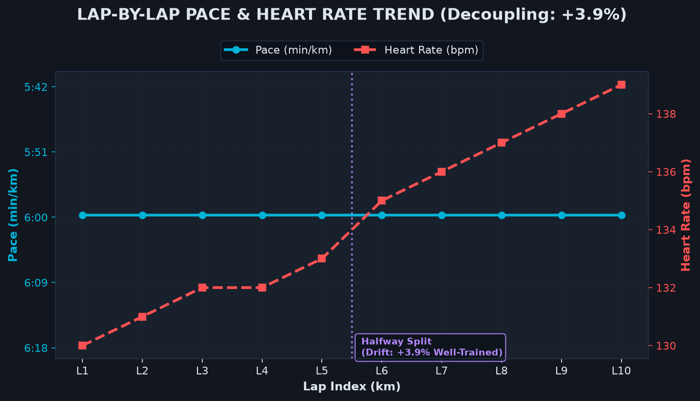
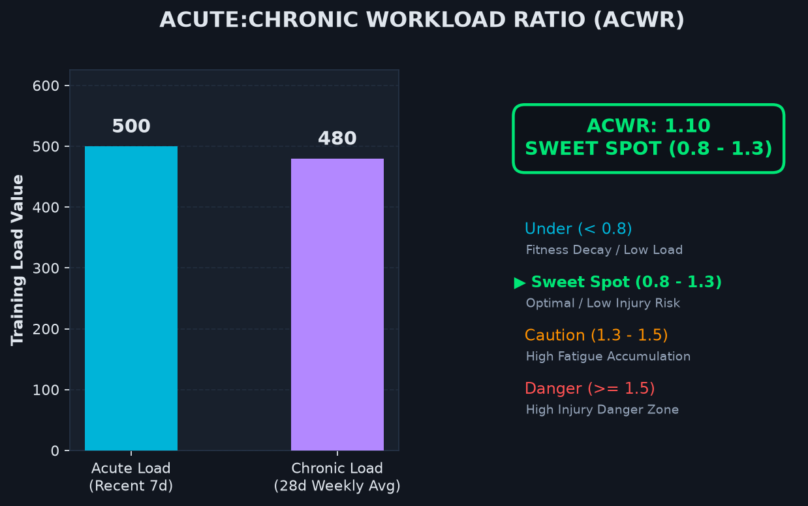
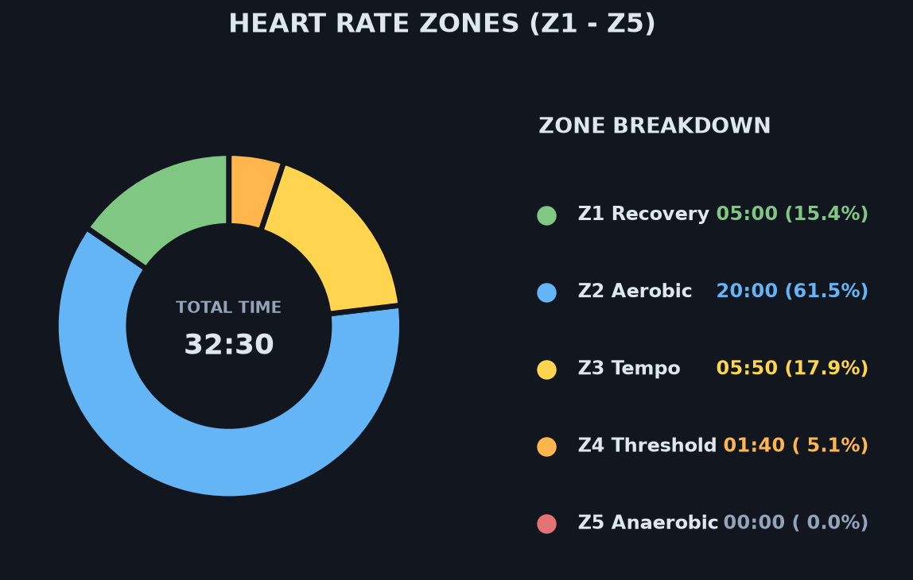
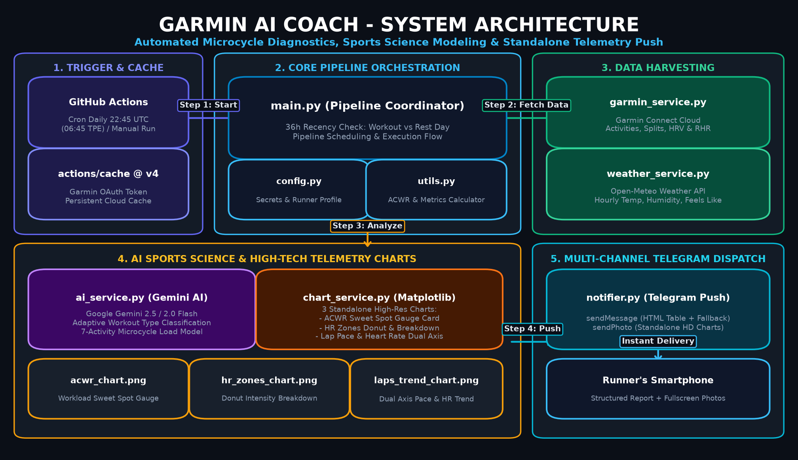

Every morning, automatically sync your Garmin Connect metrics and 3-month race countdown, fetch on-the-spot historical temperature & humidity from Open-Meteo, and generate VDOT Target Paces, ACWR Workload Ratios, and Daily Adaptive Workout Menus via Google Gemini, delivered seamlessly to Telegram.
Featuring a dual-track split: Part 1 presents telemetry metrics and lap splits; Part 2 is dedicated to Gemini AI coaching diagnosis and daily adaptive workout menus; accompanied by 3 independent high-definition sports science charts.



1. Workout Execution Evaluation: Identified as "Zone 2 Aerobic Base Run". Time in Z2 reached 86%, cadence steady at 178 spm, even pacing throughout. Outstanding execution quality.
2. Aerobic Decoupling Diagnosis: Today's decoupling rate is 3.2% (Well-Trained zone). No significant cardiac drift observed, demonstrating a solid aerobic base with effective thermoregulation at 24°C.
3. Periodization Analysis: 32 days out from EVA Air Half Marathon (Specialized Prep Phase 2). Current ACWR 1.14 is in the optimal adaptation window with no signs of overtraining.
1. Load & Fatigue Diagnosis: Accumulated 42.5 km in 7 days, HRV rebounded to 62ms, cardiovascular fatigue fully dissipated. Perfect timing for supercompensation.
2. Active Recovery Prescription: 15 min foam rolling (calves and quads) + 20 min core isometric holds. No strenuous cardio needed.
3. Nutrition Focus: 35ml water per kg body weight, high-quality protein (soy milk, chicken, eggs) to repair muscle fibers.
Far beyond basic GPS distance tracking: Built on exercise physiology models including Jack Daniels' VDOT, ACWR, and Aerobic Decoupling %.
Real-time derivation from your personal Marathon PB into E, M, T, I, and R training paces based on scientific oxygen cost equations.
7-day acute fatigue vs 28-day chronic fitness workload ratio, categorized into 4 tiers to keep your training in the optimal Sweet Spot.
Joe Friel's Efficiency Factor (EF) model split into first & second halves, diagnosing cardiac drift and aerobic base solidity.
Auto-syncs Garmin calendar races (next 90 days, de-duplicated), periodizes training phases, and dynamically adapts between weekday and weekend time slots.
Dynamically scans Gemini 2.5 / 2.0 Flash models with automated millisecond failover upon peak 503 UNAVAILABLE errors. 100% push reliability.
Fetches historical temperature, relative humidity, and heat index at the exact GPS coordinates and start time to factor in thermal stress.
Running Power (W), Cadence (spm), Stride Length, Vertical Oscillation, Stride Ratio, and Ground Contact Time (GCT) running economy analysis.
Integrates overnight HRV, Resting Heart Rate, and Body Battery; gracefully skips missing data without interrupting the workflow.
No crammed multi-panel images! Matplotlib outputs standalone high-res images for pace/HR trend, ACWR gauge, and HR zones donut.
Ported directly from our project's Python sports science algorithms. Input your race time to test Jack Daniels' VDOT formula live!
Daniels' Running Formula
Joe Friel Efficiency Factor (EF) Model
Cardiac drift is below 3.0%, indicating an exceptionally solid aerobic foundation with minimal compensatory cardiovascular strain over time.
An event- and schedule-driven modern Python architecture, decoupling data ingestion, exercise physiology algorithms, AI prompt engineering, and instant messaging push.

Left Y-axis features inverted time-based pace, right Y-axis displays HR, with a purple vertical halfway decoupling split.
Left side compares 7-day acute vs 28-day chronic load; right side features large status badge and 4-tier injury-prevention gauge.
Sporty donut chart displays total workout duration with a clean vertical breakdown of time-in-zone and percentages.
No cloud server (VPS) required, no software installation! Simply fork on GitHub and run free forever.
Navigate to our GitHub repo and click the Fork button in the top right to copy the codebase into your personal account.
In your repo, go to Settings → Secrets and variables → Actions and input these 5 keys:
Click the Actions tab in your repo and enable workflows. It will run automatically every morning, or you can trigger Run workflow manually anytime!
Customize RUNNER_NAME, RUNNER_PB (e.g. 3:45), RUNNER_BIRTH_YEAR, and ZONE2_MAX_HR for custom VDOT target zones.
Everything you need to know about security, costs, APIs, and schedule timing.
Yes, 100% free! GitHub Actions provides 2,000 free CI/CD minutes per month (this script takes only 30-50 seconds daily, and is unlimited for public repos); Google Gemini API offers a generous free tier (hundreds of daily requests); Open-Meteo weather API is completely open-source without requiring an API key.
Extremely secure. All credentials are stored inside your private GitHub Repository Secrets, encrypted via asymmetric public-key cryptography on GitHub's secure infrastructure. The code is 100% open-source Python, connecting directly from the GitHub runner to Garmin Connect with zero third-party proxies.
Yes! The system features an intelligent 26-hour recency detection window. If no new workout has been logged, it automatically switches to the Rest Day & Supercompensation Report, analyzing your rolling 7-workout cumulative volume and acute workload to prescribe foam rolling, hydration recovery, and a preview of your next session.
Absolutely. Simply edit .github/workflows/daily_task.yml in your repository and adjust the cron expression (default is UTC 19:55, which delivers around 03:55~04:00 AM local time for early risers to review their plan for the day; note GitHub Actions cron operates in UTC).